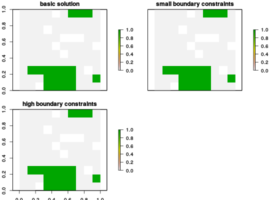

Add constraints to a conservation problem that favor solutions that clump selected planning units together into contiguous reserves.
add_boundary_constraint(x, penalty, edge_factor)
ConservationProblem-class object.numeric penalty for exposed edges. This
is equivalent to the
http://marxan.net/downloads/uq_marxan_web_2/module2.html
parameter in http://marxan.net.numeric proportion to scale edges that do
not have any neighboring planning units. For example, an edge factor
of 0.5 is commonly used for planning units along the coast line.ConservationProblem-class object.
constraints for a list of all available constraints.
# create basic problem p <- problem(sim_pu_raster, sim_features) %>% add_minimum_set_objective() %>% add_relative_targets(0.2) # create problem with low boundary penalties p2 <- p %>% add_boundary_constraint(5, 1) # create problem with high boundary penalties # receive half the penalty as inner edges p3 <- p %>% add_boundary_constraint(100, 1) # solve problems solve(p)#> Optimize a model with 585 rows, 380 columns and 1610 nonzeros #> Variable types: 0 continuous, 380 integer (380 binary) #> Coefficient statistics: #> Matrix range [2e-01, 1e+00] #> Objective range [5e-01, 3e+02] #> Bounds range [1e+00, 1e+00] #> RHS range [6e+00, 1e+01] #> Found heuristic solution: objective 4728.38 #> Presolve time: 0.02s #> Presolved: 585 rows, 380 columns, 1610 nonzeros #> Variable types: 0 continuous, 380 integer (380 binary) #> Presolved: 585 rows, 380 columns, 1610 nonzeros #> #> #> Root relaxation: objective 3.967468e+03, 475 iterations, 0.02 seconds #> #> Nodes | Current Node | Objective Bounds | Work #> Expl Unexpl | Obj Depth IntInf | Incumbent BestBd Gap | It/Node Time #> #> 0 0 3967.46769 0 59 4728.37913 3967.46769 16.1% - 0s #> H 0 0 4604.1370005 3967.46769 13.8% - 0s #> H 0 0 4151.1879602 3967.46769 4.43% - 0s #> #> Explored 0 nodes (475 simplex iterations) in 0.05 seconds #> Thread count was 1 (of 2 available processors) #> #> Solution count 3: 4151.19 4604.14 4728.38 #> Pool objective bound 3967.47 #> #> Optimal solution found (tolerance 1.00e-01) #> Best objective 4.151187960154e+03, best bound 3.967467690498e+03, gap 4.4257%#> class : RasterLayer #> dimensions : 10, 10, 100 (nrow, ncol, ncell) #> resolution : 0.1, 0.1 (x, y) #> extent : 0, 1, 0, 1 (xmin, xmax, ymin, ymax) #> coord. ref. : NA #> data source : in memory #> names : layer #> values : 0, 1 (min, max) #>#> Optimize a model with 585 rows, 380 columns and 1610 nonzeros #> Variable types: 0 continuous, 380 integer (380 binary) #> Coefficient statistics: #> Matrix range [2e-01, 1e+00] #> Objective range [5e-01, 3e+02] #> Bounds range [1e+00, 1e+00] #> RHS range [6e+00, 1e+01] #> Found heuristic solution: objective 4728.38 #> Presolve time: 0.01s #> Presolved: 585 rows, 380 columns, 1610 nonzeros #> Variable types: 0 continuous, 380 integer (380 binary) #> Presolved: 585 rows, 380 columns, 1610 nonzeros #> #> #> Root relaxation: objective 3.967468e+03, 475 iterations, 0.01 seconds #> #> Nodes | Current Node | Objective Bounds | Work #> Expl Unexpl | Obj Depth IntInf | Incumbent BestBd Gap | It/Node Time #> #> 0 0 3967.46769 0 59 4728.37913 3967.46769 16.1% - 0s #> H 0 0 4604.1370005 3967.46769 13.8% - 0s #> H 0 0 4151.1879602 3967.46769 4.43% - 0s #> #> Explored 0 nodes (475 simplex iterations) in 0.03 seconds #> Thread count was 1 (of 2 available processors) #> #> Solution count 3: 4151.19 4604.14 4728.38 #> Pool objective bound 3967.47 #> #> Optimal solution found (tolerance 1.00e-01) #> Best objective 4.151187960154e+03, best bound 3.967467690498e+03, gap 4.4257% #> Optimize a model with 585 rows, 380 columns and 1610 nonzeros #> Variable types: 0 continuous, 380 integer (380 binary) #> Coefficient statistics: #> Matrix range [2e-01, 1e+00] #> Objective range [5e-01, 3e+02] #> Bounds range [1e+00, 1e+00] #> RHS range [6e+00, 1e+01] #> Found heuristic solution: objective 4728.38 #> Presolve time: 0.01s #> Presolved: 585 rows, 380 columns, 1610 nonzeros #> Variable types: 0 continuous, 380 integer (380 binary) #> Presolved: 585 rows, 380 columns, 1610 nonzeros #> #> #> Root relaxation: objective 3.967468e+03, 475 iterations, 0.01 seconds #> #> Nodes | Current Node | Objective Bounds | Work #> Expl Unexpl | Obj Depth IntInf | Incumbent BestBd Gap | It/Node Time #> #> 0 0 3967.46769 0 59 4728.37913 3967.46769 16.1% - 0s #> H 0 0 4604.1370005 3967.46769 13.8% - 0s #> H 0 0 4151.1879602 3967.46769 4.43% - 0s #> #> Explored 0 nodes (475 simplex iterations) in 0.03 seconds #> Thread count was 1 (of 2 available processors) #> #> Solution count 3: 4151.19 4604.14 4728.38 #> Pool objective bound 3967.47 #> #> Optimal solution found (tolerance 1.00e-01) #> Best objective 4.151187960154e+03, best bound 3.967467690498e+03, gap 4.4257% #> Optimize a model with 585 rows, 380 columns and 1610 nonzeros #> Variable types: 0 continuous, 380 integer (380 binary) #> Coefficient statistics: #> Matrix range [2e-01, 1e+00] #> Objective range [5e-01, 3e+02] #> Bounds range [1e+00, 1e+00] #> RHS range [6e+00, 1e+01] #> Found heuristic solution: objective 4728.38 #> Presolve time: 0.01s #> Presolved: 585 rows, 380 columns, 1610 nonzeros #> Variable types: 0 continuous, 380 integer (380 binary) #> Presolved: 585 rows, 380 columns, 1610 nonzeros #> #> #> Root relaxation: objective 3.967468e+03, 475 iterations, 0.01 seconds #> #> Nodes | Current Node | Objective Bounds | Work #> Expl Unexpl | Obj Depth IntInf | Incumbent BestBd Gap | It/Node Time #> #> 0 0 3967.46769 0 59 4728.37913 3967.46769 16.1% - 0s #> H 0 0 4604.1370005 3967.46769 13.8% - 0s #> H 0 0 4151.1879602 3967.46769 4.43% - 0s #> #> Explored 0 nodes (475 simplex iterations) in 0.03 seconds #> Thread count was 1 (of 2 available processors) #> #> Solution count 3: 4151.19 4604.14 4728.38 #> Pool objective bound 3967.47 #> #> Optimal solution found (tolerance 1.00e-01) #> Best objective 4.151187960154e+03, best bound 3.967467690498e+03, gap 4.4257%# plot solutions plot(s, main = c('basic solution', 'small boundary constraints', 'high boundary constraints'))